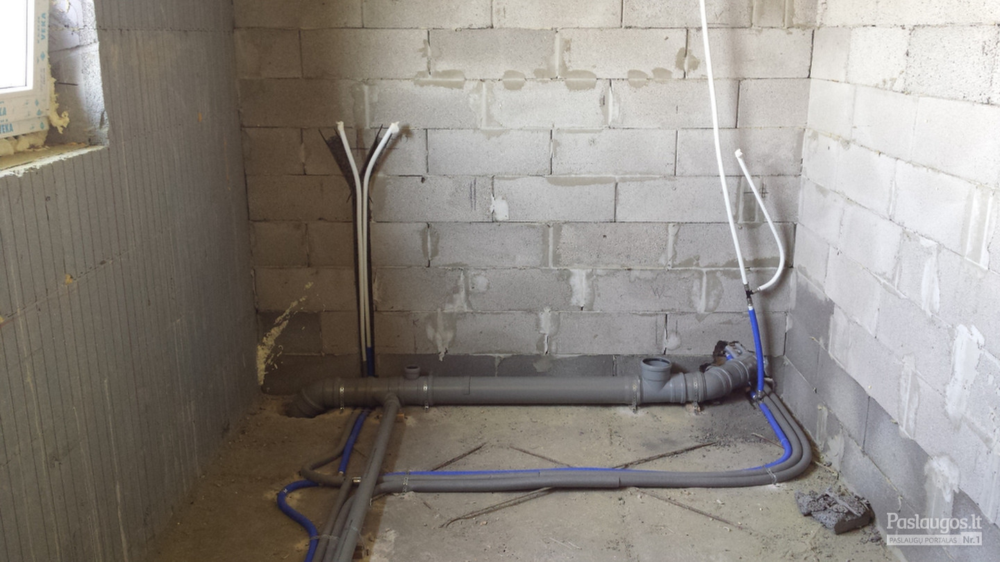

Santechkomplektas |

Klaipėda +370 46 341481
Kaunas +370 37 306 401
Santechkomplektas
Navigation Pagrindinis Apie mus Partneriai Katalogas Kontaktai Akcijos Naujienos Karjera Pagrindinis Apie mus Partneriai Katalogas Kontaktai Akcijos Naujienos Karjera Vamzdžiai ir fitingai Plieniniai vamzdžiai: vandens dujų, magistraliniai, cinkuoti PE lauko vandetiekio vamzdžiai ir jungtys Nerūdijančio plieno gofruotas vamzdis ir jungtys Laistymo žarnos ir jungtys Polipropileniai vamzdžiai (PPR) ir jungtys Variniai vamzdžiai ir jungtys Ketinės jungtys Daugiasluoksnis vamzdis PEX-AL-PEX, PERT-AL-PERT ir jungtys Presuojami cinkuoti vamzdžiai ir jungtys Žalvarinės jungtys Vamzdis PERT, PEX su difuziniu deguonies barjeru Klijuojama sistema PVC-U, PVC-C Vamzdžio šarvas Close Nuotekų sistemos Vidaus nuotekų sistema Kanalizacijos šulinių dangčiai, drenažinių šulinių sistemos Silikoniniai tepalai Lauko buitinių nuotekų sistema Trapai Tarpinės, žiedai, manžetai Drenažo vamzdžiai Alsuokliai ir ventiliacijos stogeliai Ketaus liukai ir trapai Kanalizacijos atbuliniai vožtuvai Close Vandentiekio jungiamosios dalys, laikikliai Plieniniai flanšai EN, GOST Plieninės sferinės aklės Laikikliai, U-profiliai, konsolės, montažinės juostos Plieninės alkūnės EN, GOST Plieniniai vienasriegiai, trumpasriegiai, ilgasriegiai, movos Srieginiai strypai Plieniniai perėjimai EN, GOST Universalūs sujungimai GEBO Varžtai, veržlės, poveržles Plieniniai trišakiai Kompensatoriai Ankeriai, diubeliai Close Uždaromoji armatūra Plieniniai rutuliniai ventiliai Manometriniai ventiliai Plieninės sklendės Ketiniai ventiliai Plieninės sparnuotos sklendės Žalvariniai rutuliniai ventiliai Žalvariniai rutuliniai laistymo ventiliai Peilinės sklendės Plieniniai ventiliai Ketiniai rutuliniai ventiliai Ketinės sklendės Užsklandos ketinės tarpflanšinės Čiaupai Žalvariniai rutuliniai ventiliai su nuorintoju Žalvarinės sklendės Žalvariniai ventiliai Prietaisiniai ventiliai Close Reguliuojanti, apsauginė armatūra ir automatika Reguliuojantys vožtuvai, elektros pavaros ir priedai Balansiniai ventiliai Automatika ir aksesuarai Slegio reguliatoriai Apsauginiai vožtuvai Valdymo blokai ir valdikliai Termoreguliatoriai Elektromagnetiniai vožtuvai Sumaišymo vožtuvai, termostatiniai sumaišymo vožtuvai ir priedai Atbuliniai vožtuvai Close Filtrai, automatiniai nuorintojai, kondensato nuvedejai Filtrai ketiniai, pleniniai, žalvariniai Kasetiniai vandens filtrai Kondensato nuvedėjai Automatiniai nuorintojai Close Kolektoriai ir grindinis šildymas Kolektoriai Elektrinė grindų šildymo sistema Kolektorių mazgai ir komplektuojančios dalys Vandeniu šildomos grindys ir komplektuojančios dalys Kolektorinės spintelės Close Vamzdžių izoloacija, sandarinimo medžiagos, montavimo putos, silikonai Vamzdžiu izoliacija (mirelonas) LDPE Tarpinės Tefloninė sandarinimo juosta, sandarimo siulas Vamzdžiu izoliacija (kaučiukas) Linai, sandarinimo pastos Lipnios juostos Akmens vatos kevalai Silikoniniai tepalai Dažai, lakas, gruntai Akmens vatos dembliai Montavimo putos, silikonai, klijai Close Radiatoriai, konvektoriai, priedai Plieniniai radiatoriai Radiatorių termostatai, termostatiniai ventiliai Ketaus radiatoriai Radiatorių pajungimo ventiliai Bimetaliniai radiatoriai Radiatorių priedai Konvektoriai Close Buitinė santechnika vonios kambario įranga Vonios ir priedai Keramikiniai praustuvai ir priedai Sifonai, trapai, vandens išleidimo/ padavimo žarnos Vonios kambario baldai Klozetai, potinkinės sistemos ir priedai Nerūdijančio plieno ir emaliuotos plautuvės Maišytuvai ir priedai Bidė, pisuarai ir priedai Dušo kabinos ir priedai Kietos ir lanksčios jungtys (žarnelės) WC armatūra Dušo padėklai ir priedai Rankšluosčių džiovintuvai ir priedai Close Matavimo prietaisai Manometrai Šilumos skaitikliai Termometrai Matavimo prietaisų priedai Termomanometrai Vandens skaitikliai Close Siurbliai, valdymo įranga ir montavo medžiagos Cirkuliaciniai siurbliai Sausai statomi horizontalūs siurbliai Siurbliai su hidroforu Valdymo įranga Giluminiai siurbliai Montavimo medžiagos Drenažiniai, fekaliniai siurbliai Close Šildymo katilai Kieto kuro katilai Neužšalantis skystis šildymo įrangai Granuliniai katilai Dujiniai katilai Katilinių įranga Close Vandens šildytuvai, akumuliacinės talpos Elektriniai vandens šildytuvai, boileriai Priedai vandens šildytuvams Kombinuoti Vandens Šildytuvai Akumuliacinės Talpos Momentiniai vandens šildytuvai Close Hidroforai, išsiplėtimo indai Išsiplėtimo indai ir priedai Hidroforai ir priedai Close Priešgaisinės įranga Priešgaisrinės movos Preišgaisrinės spintelės Priešgaisrinės žarnos Gaisriniai čiaupai ir jų įranga Close Šilumokaičiai Plokšteliniai šilumokaičiai Close Įrankiai PPR sistemos įrengimo įrankiai Sandarumo nustatymo įranga Daugiasluoksnio vamzdyno sistemos įrengimo įrankiai Pjovimo diskai Vamzdžių lankstymo, pjovimo ir sriegimo instrumentai Universalus raktas Suverinimo įranga ir medžiagos Vamzdynų valymo įrenginiai CloseSantechnikos paslaugos
Laiko ir EU bei SNG šalių patikrinti kokybiški renovaciniai radiatoriai. Galingos nuolaidos!!! Teirautis pas filialų vadybininkus .
Naujienos
Kieto kuro katilais KLIMOSZ
spalio 17, 2018 admin 0 NaujienosNaujas adresas: Šilutės pl. 49, Klaipėda
spalio 17, 2018 admin 0UAB “Santehkomplektas”
Prekybos salonas: „Santechnikos meistras”
Šilutės pl. 49, Klaipėda, LT-94105
Telefonas: +370 46 341481
Faksas: +370 46 341481
E-mail: info@santech.lt
Kauno sandėlis
Adresas: Partizanų g. 19, LT-49477 Kaunas
Telefonas: +370 37 306 401
Faksas : +370 37 306 400
E-mail: info@santech.lt